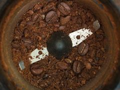

Lees deze handleiding door voor je de machine voor het eerst aanzet, en bewaar ze samen met het garantiebewijs.
Gebruik altijd vers leidingwater. Vul nooit boven de streep aan de binnenkant.
Laat twee kopjes water doorlopen zonder koffie in de zeef.
Voor espresso maal je fijn, voor een lungo iets grover.

Druk het koffiedik gelijkmatig aan tot het oppervlak vlak is.
Een goede espresso loopt in 25 tot 30 seconden door.
Weeg je bonen af. Een espresso die te snel doorloopt smaakt zuur, en dat ligt zelden aan de machine.
Spoel de zeefdrager om en veeg het stoompijpje af.
Ontkalk om de drie maanden, of vaker in een streek met hard water.
Meer achtergrond bij deze manier van koffiezetten lees je op Wikipedia.